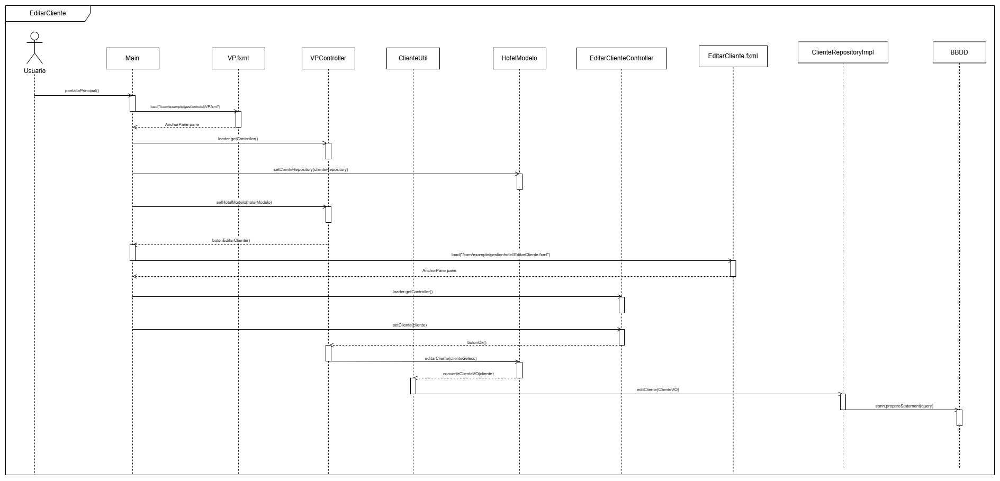
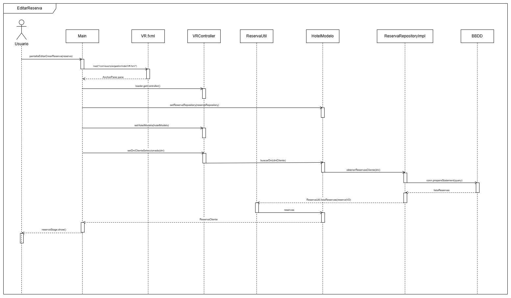

Este proyecto es una aplicación que permite gestionar reservas de un hotel, donde podremos crear, editar y eliminar clientes, con el adicional que en la opción de crear el nuevo cliente también se podrá crear una nueva reserva asociada al nuevo cliente, y se podrá buscar e un cliente mediante su DNI, si embargo, en el caso de que el DNI sea null o no tenga el formato deseado nos saltará una alerta.
Además de que se podrán ver todos las reservas asociadas a los clientes son tan solo darle al botón "Ver reservas", ahí encontraremos todas las reservas asociadas al mismo cliente, debido a que buscamos las reservas mediante el dni del cliente, que es la foreing key en la base de datos.
Una vez en la pantalla de las reservas, además de ver todas las reservas, como anteriormente se ha dicho, podremos crear nuevas reservas, las cuales estarán asociadas al cliente que hemos previamente seleccionado; editar una reserva que hayamos seleccionado en la pantalla VR, y eliminar las reservas.
Diagrama de Casos de uso
En este diagrama podemos observar cómo interactua el usuario con el proyecto. De manera que éste puede crear nuevos clientes, editarlos, eliminarlos y buscarlos, además de que en las opciones del menú pueden ver los tipos de habitaciones que hay, con imágenes incluidas, y el porcentaje de la ocupación de cada una de ellas; ver las estadísticas de la ocupación de las habitaciones en total, en porcentaje; y ver esta documentación, que es un HTML añadido con un WebView. Y por último, podrá ver las reservas del cliente que seleccione, y en él podrá crear una nueva reserva para dicho cliente, editar la reserva y eliminarla.
Diagramas de secuencia
A continuación vamos a ver tres diagramas de secuencia:
Diagrama de Editar Cliente

En este diagrama de secuencia de Editar Cliente, podemos ver cómo es el flujo del trabajo que hace el programa para editar el cliente mediante la interfaz y a su ve editarlo en la Base de Datos.
Diagrama de Editar Reserva
Éste diagrama es muy parecido al anterior, de Editar Cliente, ya que hacen prácticamente lo mismo, con la diferencia de que éste edita las reservas y el otro edita los clientes.
Diagrama de Ver Reservas

En este diagrama podemos observar cómo es el flujo del trabajo que hace el programa para que nos muestre las reservas que tiene asociado el cliente seleccionado en el VP.